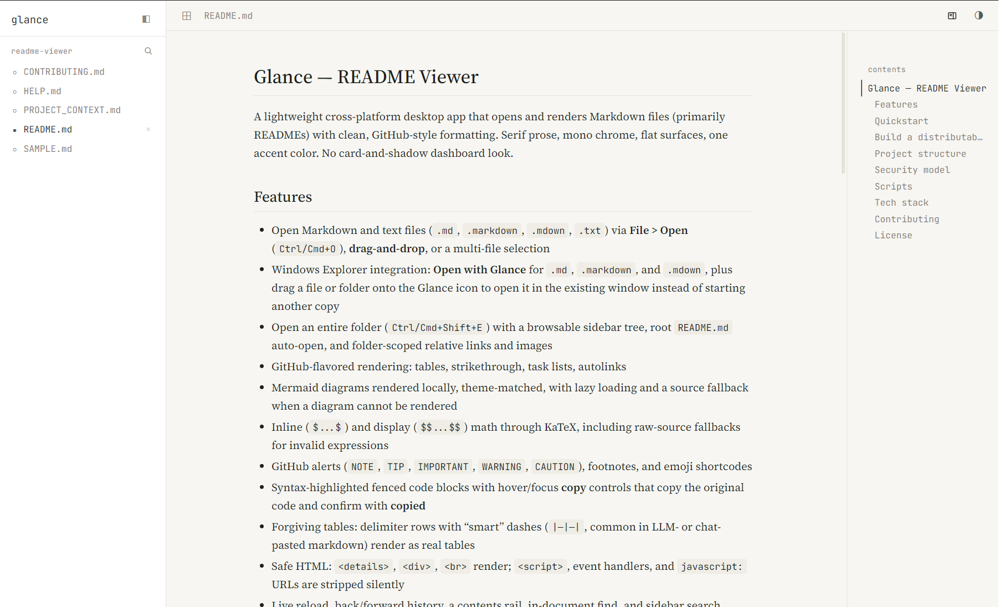
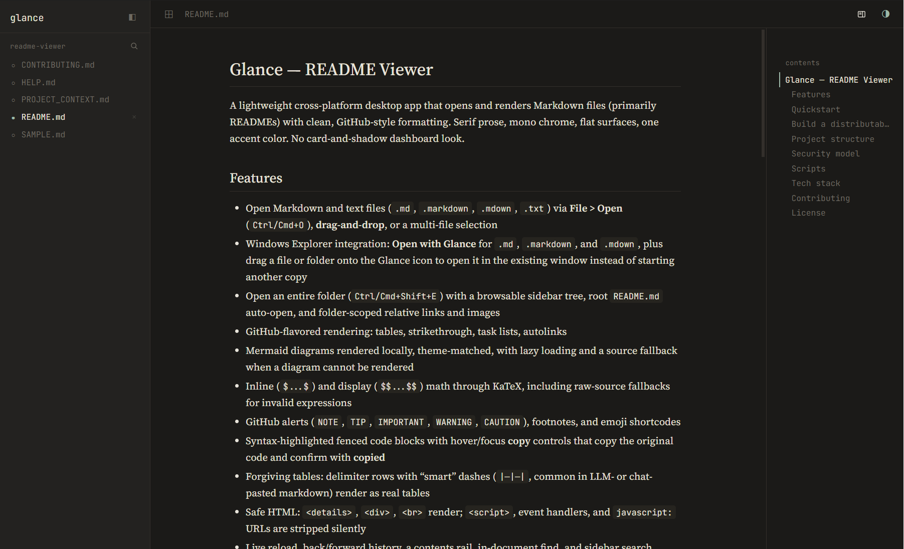

Folder mode
Open a repository and browse every Markdown file from a live tree. The root
README.md opens automatically when it exists.
A README viewer for Windows
Glance is a quiet Windows app for Markdown files and folders. Open a repo, follow links, search the tree, and keep your place—without a browser tab.


What it does
No dashboard, no preview pane, no tab strip. Just the file you opened and the tools that help you move through it.
Open a repository and browse every Markdown file from a live tree. The root
README.md opens automatically when it exists.
Double-click a file, use the Explorer context menu, or drop it on the app icon. It opens in the window you already have.
Edit in your editor and the page follows the file on disk, keeping your place as the document changes.
Jump by heading, find text inside the document, or search across the folder and the files you have open.
Glance reopens the last document and the files you had open. Close any file from the sidebar when you are done with it.
Follow the system theme or switch by hand. Prose, code, tables, and diagrams change with it.
Two reading moods
The theme follows your system on first launch and remembers your choice. The preview at the top of this page switches with it, too.
Download
One installer for Windows x64. No account, no browser extension, and no web app to keep open.
Windows x64
83.8 MB installer · unsigned build
52C0BE36B17CDDB21C76C1B60CCA5CC5731154E5D167626DD6D1A49812551945
Windows may show a SmartScreen warning because this build is unsigned. Choose More info → Run anyway if you trust the source. Release notes.
License
Glance is released under the PolyForm Noncommercial License 1.0.0. Use it for personal projects, study, and noncommercial work.
For commercial use, get in touch via GitHub.